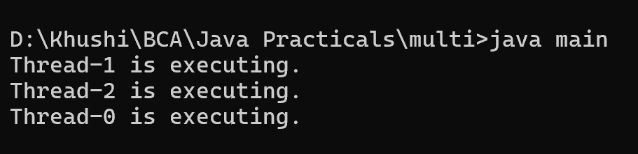

8. Create the program to create multiple threads by using Runnbale interface
class main {
public static void main(String[] args) throws InterruptedException {
Runnable task = new Runnable() {
public void run() {
System.out.println(Thread.currentThread().getName() + " is executing.");
}
};
Thread thread1 = new Thread(task);
Thread thread2 = new Thread(task);
Thread thread3 = new Thread(task);
thread1.start();
thread2.start();
thread3.start();
thread1.join();
thread2.join();
thread3.join();
}
}
